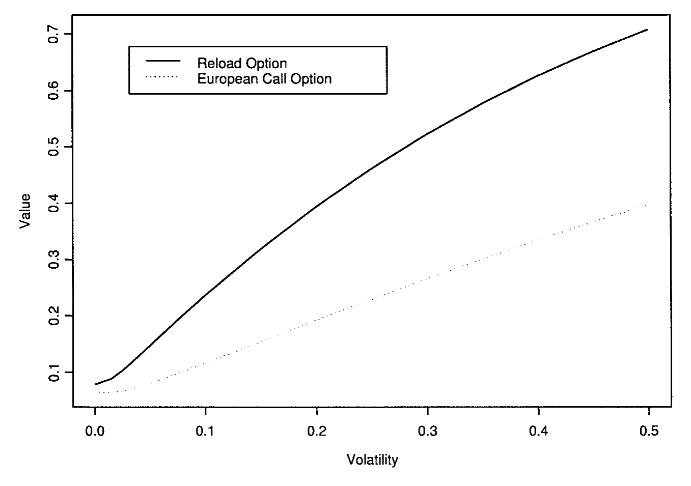
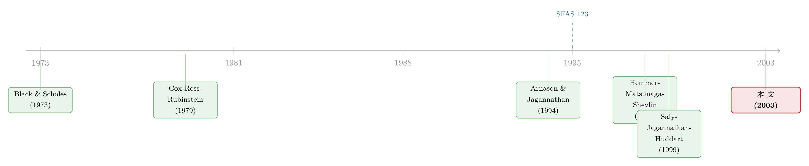

行权就再送你一张期权：这台「印钞机」为什么印不出钱
本文读的是 Dybvig & Loewenstein (2003, Review of Financial Studies)：一种行权时会「再生」出新期权的高管期权——重载期权（reload option）——看上去像一台可以反复套现的复合期权印钞机，但作者用一个与分布无关的占优论证证明，它的最优行权策略简单到一句话「只要价内就行权」；由此可以给出干净的估值与对冲公式，而它的价值始终被夹在一份美式看涨期权与一股股票之间。
1 一台「印钞机」的指控
先讲一个让人不安的故事。
假设公司给了你一种期权。它和普通的看涨期权一样：手里有 100 份、行权价 $100、股价涨到 $125 时，你可以用 80 股股票（市值 $125 × 80 = $10,000）去抵付 $100 × 100 = $10,000 的行权款，净落 20 股、市值 $2,500。到这里都很正常。
但这种期权多了一条：你每拿出一股去抵付行权款，公司就再送你一份新期权——同样的到期日，行权价等于此刻的股价 $125。于是上面那次行权，你除了拿到 20 股，还白得 80 份全新的、行权价 $125 的期权。这种「行权即再生」的合约，就叫 重载期权（reload option，又称 restoration / replacement option）。
它最早是 1987 年 Frederic W. Cook 公司为 Norwest 设计的，到 1997 年已经出现在 17% 的新增期权计划里（1996 年还是 14%）。增长够快，争议也够大。批评者的直觉很简单：能反反复复行权、反反复复领新期权，这不就是一台没有上限的印钞机吗？有大型机构投资者甚至声明，只要计划里有这个条款，就投反对票。连会计准则委员会都举了白旗——SFAS 123 第 186 段写道：理论上重载期权应当在授予日就把所有特性算进价值里，但「at this time, it is not feasible to do so」（眼下做不到）。
这篇论文真正想说的是：「做不到」是个错觉。让重载期权显得像天书的，是它那层「复合期权」的外壳；一旦你找对了角度，它简单得几乎可以手算。
这就是全文的张力所在。接下来我们要回答的，其实只有一个问题：一个能无限「自我繁殖」的期权，到底该怎么行权、又值多少钱？
2 先把「无底洞」堵上：两条边界
在动用任何数学之前，作者先做了一件聪明事——给这台「印钞机」的产出定个上下界。
下界很自然：重载期权至少值一份美式看涨期权。因为持有人完全可以装作手里是普通美式期权，按它的最优策略行权、从此再也不碰那些再生出来的新期权——这样他拿到的就是美式期权的收益。既然「能做到至少这么多」，重载期权不会更便宜。
上界才是要害：无论能重载多少次、无论到期日多长（哪怕是无限期），一份重载期权的价值都不会超过一股股票本身。 这一条直接击碎了「印钞机」的指控。
怎么证？跟着钱算一遍就好。记第 \(i\) 次行权时的股价为 \(S(\tau_i)\)，约定 \(S(\tau_0)=K\)。第一次行权后，每份重载期权给你 \(\left(1-\frac{K}{S(\tau_1)}\right)\) 股，外加 \(\frac{K}{S(\tau_1)}\) 份新期权（行权价 \(S(\tau_1)\)）。第二次行权再添 \(\frac{K}{S(\tau_1)}\left(1-\frac{S(\tau_1)}{S(\tau_2)}\right)\) 股，两次累计的股数恰好望远镜式地叠成：
$$\left(1-\frac{K}{S(\tau_1)}\right)+\frac{K}{S(\tau_1)}\left(1-\frac{S(\tau_1)}{S(\tau_2)}\right)=1-\frac{K}{S(\tau_2)}$$
一般地，第 \(i\) 次行权之后，持有人累计拿到 \(1-\dfrac{K}{S(\tau_i)}\) 股，同时手里还攥着 \(\dfrac{K}{S(\tau_i)}\) 份行权价为 \(S(\tau_i)\) 的新期权。
关键就藏在这个 \(1-\dfrac{K}{S(\tau_i)}\) 里：无论股价涨到天上去，它永远小于 1。也就是说，一份初始的重载期权，把后面所有的再生、行权、再生……全部加总，净拿到的股数也凑不满一整股；何况你还错过了这些股票早年的分红。那不如一开始就老老实实持有一股、把所有年份的分红都收下——所以一股股票，就是重载期权的天花板。
这个望远镜式的求和是全文的「第一个魔术」。它说明：所谓「无限重载」并不会让公司失控地增发股份——整串行权链条净增发的股数，始终被初始期权数量锁死，和普通看涨期权没有区别。
3 真正关键的一步：一个与分布无关的占优策略
边界堵上了，可我们还是不知道到底该什么时候行权。复合期权的难处正在于此：今天行权，会换来一串新期权，而这些新期权的最优行权时点又依赖于未来的股价路径……一层套一层，看起来必须先对股价过程建模、再用动态规划倒推。
接着，一个自然的问题是：能不能绕开建模？作者给出的答案，是这篇论文最漂亮的地方。
他们先把行权环境抽象成五条假设，而这些假设出奇地弱：(1) 雇员总能再多持有一些股票；(2) 他手里（或借得到）足够的股票来支付行权款；(3) 行权这个动作本身不影响股价、分红或他的其他薪酬；(4) 分红非负、股价为正，且雇员「多多益善」；(5) 没有税收和交易成本。注意：这里完全没有对股价分布、波动率、利率过程做任何假设，甚至允许雇员在卖出股票上受到各种限制。
在这样几乎「裸」的环境里，作者证明了：
定理 1（最优行权策略）。 只要重载期权处于价内（in the money）就立即行权、处于价外就不行权，是一个最优策略。在网格 \(\{t_1,\dots,t_n\}\) 上，这一策略导出的行权价过程为
换句话说，最优策略下的行权价，就是股价的「跑动最高水位」（以 \(K\) 为地板）。这是个极优雅的刻画：你不需要解任何随机微分方程，只要盯着股价创没创新高。
那为什么「价内就行权」是最优的？证明用的是占优（dominance）而非偏好或概率。直觉是这样：固定任意一个可行的行权策略 \(X(t)\) 以及与之配套的全部消费、投资决策，再把行权策略单独换成候选最优 \(X^*(t)\)、其余一切保持不变。可以验证 \(X^*(t)\ge X(t)\)，于是新策略下持有的股数过程 \(\Phi^*(t)\) 处处不少于原来的 \(\Phi(t)\)——
早行权，就能更早把股票拿到手、更早领分红，而且拿到的股票不会更少。 一个「多多益善、且偏好早拿分红」的雇员，不管他内心的效用函数长什么样、不管股价服从什么分布，都会更喜欢这个策略。这就是「distribution-free dominant policy」的含义：结论不依赖任何模型。
这一步是全文的枢纽。它把一个看似要靠动态规划硬解的复合期权问题，化简成了一句「价内就行权」。一旦行权策略被钉死，剩下的就只是估值——而估值，是有公式的。
并且作者指出，若股价在两个网格点之间总有下跌的可能（即「常规情形」），那么这个策略还是唯一的最优策略（在「平价时行不行权无所谓」的意义下）。这一点和 Jagannathan (1984) 关于「看涨期权与标的风险」的经典讨论一脉相承——风险如何影响期权价值，并不总是想当然的（关于「风险是否一定让期权更值钱」这一微妙之处，可参见《「风险让期权更值钱」——这句人人会说的话，其实只对了一半》）。
4 估值与对冲：把复合期权写成「股价的最高值」
行权策略一旦确定，估值就顺理成章了。作者的市场环境是标准的无套利完全市场：两种基础资产，一个局部无风险的「债券」\(B(t)>0\)，一个支付累计分红 \(D(t)\) 的「股票」\(S(t)>0\)。复制一笔累计现金流 \(C(t)\) 的财富过程满足
$$W(t) = \Delta(t)B(t) + \Phi(t)S(t)$$
$$dW(t) = \Delta(t)\,dB(t) + \Phi(t)\,dS(t) + \Phi(t)\,dD(t) - dC(t)$$
其中 \(\Delta(t)\)、\(\Phi(t)\) 分别是持有的债券与股票数量。在风险中性测度 \(P^*\) 下，投资股票是一场「现值意义上的公平赌局」：对 \(s\ge t\)，
$$\frac{S(t)}{B(t)} = E^*_t\!\left[\frac{S(s)}{B(s)} + \int_t^s \frac{1}{B(u)}\,dD(u)\right]$$
完全市场保证 \(P^*\) 唯一，于是任意现金流 \(C(t)\) 在 $0^-$ 时刻的价值就是
$$E^*\!\left[\int_{t=0^-}^{T} \frac{1}{B(t)}\,dC(t)\right]$$
把定理 1 的最优行权策略代进去，重载期权的价值就被写成了关于股价（对数）跑动最高值的期望——这正是定理 2 给出的一般估值公式。它的好处是双重的：第一，不必先选定一个二叉树近似再去逼近期权价值（这是 Hemmer 等人和 Saly 等人之前的做法）；第二，因为答案只依赖 \(\log S\) 的最大值，在 Black–Scholes 假设下（无论有没有连续分红），它能进一步化成封闭形式的估值与对冲公式。一个看似要数值硬算的复合期权，最后落回到了一个「障碍/极值型」期权的老问题上——Beaglehole, Dybvig & Zhou (1997) 关于极值期权模拟的工作，正是这一类问题的工具箱。
那么它的激励效应呢？这关系到公司最关心的问题：发重载期权，到底会不会扭曲高管的行为？作者在 Black–Scholes 假设下（10 年期、利率 5%、无分红、波动率 30%）画了三张对照图，把重载期权和欧式看涨期权放在一起比：重载期权的价值确实更高，但对冲比率（hedge ratio, delta）始终介于 0 与 1 之间，复制组合持有的股数不超过一股；而衡量激励的「每单位价值的 delta」，两者也相当接近。结论因此相当「反高潮」：重载期权给出的激励，和传统员工期权、乃至直接发股票，并没有本质区别。（关于高管行权行为本身如何影响期权估值与激励，可参见《同一份期权，老板算的账和股东算的账为什么不一样？》。）
唯一让「价内就行权」这条铁律打折扣的，是分红。当股票派息时，提早行权拿到股票虽然能早领分红，但行权价被「垫高」也更狠，两股力量开始拉扯，最优边界因此不再是简单的「一沾价内就行权」。作者用一张图刻画了派息情形下重载期权价值的形状。

Figure 7: we see that for a dividend-paying stock, the reload option value is
不过即便如此，作者强调：在带「时间归属」（time vesting，例如两次行权之间须等待 6 个月）的更现实合约里，数值结果显示——按「每到一个归属周期、只要价内就行权」这种朴素策略所得到的价值，与真正最优策略下的价值，相差并不大。也就是说，时间归属会显著改变最优行权的时点，却对估值影响有限。这对实务是个好消息：你不必把行权策略算到极致，也能把这份期权的成本估个八九不离十。
5 文献脉络
把这篇论文放回它的坐标系里，故事其实很清晰。
一切的源头当然是 Black & Scholes (1973)——没有风险中性定价与复制组合的语言，下面的一切都无从谈起。随后 Cox, Ross & Rubinstein (1979) 的二叉树模型，给了实务界一把通用的数值定价工具：任何奇形怪状的期权，似乎都可以「搭一棵树」算出来。

重载期权的早期研究，正是沿着这把二叉树工具展开的。Arnason & Jagannathan (1994) 用二叉树给「只能重载一次」的期权估值；Hemmer, Matsunaga & Shevlin (1998) 系统记录了实务中重载期权的各种形态（他们分析了 246 家公司的计划，其中 27 个对重载次数有严格限制、219 个不限次数中又有 53 个带明确归属要求），并在二叉树框架里证明了最优行权策略、给出了估值；Saly, Jagannathan & Huddart (1999) 进一步在二叉树里处理了对行权次数的限制。与此同时，会计这一侧——FASB 在 1995 年的 SFAS 123 里，正式给出了重载期权的定义，却又坦承「眼下没法在授予日给它定价」。
这篇论文站在哪里？它的贡献，是把这条「二叉树估值」的路线整体抬升了一个台阶：不再依赖某一个二叉树近似，而是在「无套利、完全市场」这个更一般的框架下，对利率、分红、股价过程都允许相当一般的随机性，给出最优行权策略与估值公式；更妙的是，这套公式可以简单地用「股价对数的最大值」算出来。它既回应了实务（会计与税务都需要一个可操作的估值），也回应了公众争议（用两条边界和望远镜求和，把「印钞机」的指控逐条拆掉）。
6 评论与延伸（Q&A + 研究方向）
(a) 几个可能的疑问
Q：定理 1 说「价内就行权」最优，可教科书不是说美式看涨期权在无分红时不应提前行权吗？这不矛盾吗？
不矛盾，因为重载期权和普通美式期权的「行权」是两码事。普通美式期权提前行权会毁掉时间价值，所以不该做；而重载期权行权时，公司会把损失的时间价值以新期权的形式还给你（行权价重置到当前股价、到期日不变）。你交出去的时间价值又换回来了，却能更早拿到股票和分红——所以这里反而是「越早越好」。
Q：这个「与分布无关」的结论，是不是太强了？凭什么连波动率都不用假设？
因为它走的是占优而非最优化。作者没有去比较「不同行权策略的期望效用谁更高」，而是直接证明：换成 \(X^*(t)\) 后，雇员在每一条股价路径上持有的股数都不少于原策略、且拿得更早。逐路径占优，自然不依赖路径的概率分布。代价是假设里那条「雇员多多益善」——这其实只要求偏好单调，非常弱。
Q：那「无税收」这条假设呢？是不是把最麻烦的东西藏起来了？
是的，作者自己也承认这是全篇最强的假设。一旦有税，把行权推迟到下一个纳税年度去延后确认收入，可能就变得有利，「价内就行权」便不再铁定最优。他们的判断是「这大概不会让市场价值偏离太多」，但坦言「this remains to be proven」。这是个诚实的留白。
Q：图里重载期权明明比欧式看涨期权值钱，怎么又说激励「差不多」？
「值钱」和「激励强度」是两回事。激励看的是 delta（股价动一块、期权价值动多少），尤其是每单位价值的 delta。作者发现，把价值这个分母除掉之后，重载期权和欧式看涨期权的曲线相当接近——它更值钱，主要是「量」更大，而不是「单位激励」更猛。所以公司不用担心它会诱发异常的冒险动机。
Q：「时间归属」既然会大幅改变最优行权时点，为什么对估值影响却小？
因为重载期权的价值，本质上由股价的跑动最高值决定，而最高值是个相当「迟钝」的统计量——你晚几个月行权、在哪个时点行权，对「这段时间股价摸到过的最高点」改动有限。所以策略的形状变了很多，但策略所捕获的价值变化不大。这也是为什么朴素的「每个归属周期价内就行权」能逼近最优。
Q：上界是「一股股票」，下界是「美式看涨」，这个区间会不会太宽、没什么用？
它的用处不在「精确」，而在「证伪」。公众争议的核心是「无限重载 = 无限价值 = 公司失控」，而一股股票这个上界——哪怕期权无限期、无限次重载也成立——一句话就把这种恐慌驳倒了。至于精确估值，作者另有定理 2 的公式负责。
(b) 几个可能的研究问题与提案
-
把「税收」正式写进重载期权的最优行权。 【经济故事】作者明说无税假设是软肋：跨纳税年度递延、长短期资本利得税率差，都可能让「价内就行权」失效，甚至诱导高管在年末/年初做策略性行权。把税收内生进来，能检验那条「市场价值偏离不大」的猜想到底站不站得住。 【可行性】中。理论侧可在带税的连续时间框架里重解最优停时；实证侧需要个体层面的高管行权记录（如 Thomson Reuters Insider Filing / 公司代理声明里的期权行权数据），识别上可利用税法改革（如资本利得税率调整）做准自然实验。难点是重载条款的明细往往要逐份合约手工读取。
-
重载期权的「再生」机制，在信用/可转债市场有没有对应物？ 【经济故事】「行权即再生」的结构，和某些可转债、含重置条款的证券（reset / step-up）在数学上同源——都涉及一个随股价/利率重置的行权边界。把本文的「跑动最高值」估值法搬到含重置条款的公司债上，或许能给这类证券一个无需建模具体路径的封闭解。 【可行性】中。需要含重置条款债券的条款数据与二级市场价格；识别主要是估值模型的实证拟合，而非因果。doable，但样本可能偏薄。
-
重载期权是否真的改变了高管的分红/风险政策？ 【经济故事】批评者担心重载期权诱导高管「削减分红、加大冒险」。本文从估值与 delta 的角度论证「激励差不多」，但这是理论预测，没有用真实公司行为去验证。 【可行性】中。可比较引入重载条款前后公司的分红率、波动率、投资政策变化，用倾向得分匹配或交错 DiD（注意近年对交错 DiD 的批评，参见《当「更稳健」的设计悄悄把符号弄反了——重读交错双重差分》）。难点是采用重载条款本身是内生的。
-
「跑动最高值」估值法对外资持有人/流动性受限投资者的扩展。 【经济故事】本文的占优论证允许雇员在卖出股票上受限。一个自然的推广是：当持有人面临更现实的流动性约束或跨境限制时（如外资高管不能自由处置本地股票），最优行权与私人价值会如何偏离市场价值？ 【可行性】低到中。理论可做，但要把私人价值与市场价值的楔子写清楚；实证需要带流动性约束维度的高管行权数据，较难获取。
7 我的判断
这篇论文的贡献，在我看来不在「公式」而在「视角」。它最了不起的地方，是用一个逐路径占优的论证，把一个被会计准则委员会判了「无法定价」死刑的复合期权，化简成「价内就行权 + 跑动最高值」两句话。这种「先证明最优策略与分布无关、再让估值水到渠成」的打法，本身就是衍生品定价里一种值得反复借鉴的思路。两条无套利边界（美式看涨 ≤ 重载期权 ≤ 股价）更是教科书级别的「用最少的假设驳倒最大的恐慌」。
对识别（这里更准确地说是「结论的稳健性」）的担忧，集中在那条无税收假设上。作者自己也承认，一旦税收进场，「价内就行权」就可能让位于「跨年度递延」，而高管薪酬恰恰是税收最敏感的领域之一。他们关于「市场价值偏离不大」的判断是合理的直觉，但终究是未经证明的猜想。此外，全文几乎不含真实公司数据——所有「激励差不多」「时间归属影响小」的结论，都来自 Black–Scholes 假设下的数值演示，而非对采用重载条款的公司的事后检验。
后续我最想看到的，是把这套漂亮的理论拖到数据面前对质：采用重载条款的公司，事后的分红、投资、风险政策，真的和发普通期权的公司没区别吗？高管的实际行权时点，又有多少偏离了「价内就行权」、偏离的部分能不能被税收动机解释？理论已经把地基打得很牢，剩下的，是让证据来说话。
参考文献
- Arnason, S., and R. Jagannathan (1994). Evaluating Executive Stock Options Using the Binomial Option Pricing Model. Working paper, University of Minnesota.
- Beaglehole, D., P. H. Dybvig, and G. Zhou (1997). Going to Extremes: Correcting Simulation Bias in Exotic Option Valuation. Financial Analysts Journal, January–February, 62–68.
- Black, F., and M. Scholes (1973). The Pricing of Options and Corporate Liabilities. Journal of Political Economy 81, 637–654.
- Cox, J., S. Ross, and M. Rubinstein (1979). Option Pricing: A Simplified Approach. Journal of Financial Economics 7, 229–263.
- Dybvig, P. H., and M. Loewenstein (2003). Employee Reload Options: Pricing, Hedging, and Optimal Exercise. Review of Financial Studies 16(1), 145–171.
- Financial Accounting Standards Board (1995). Accounting for Stock-Based Compensation. Statement of Financial Accounting Standards no. 123.
- Harrison, J. M. (1985). Brownian Motion and Stochastic Flow Systems. Wiley, New York.
- Hemmer, T., S. Matsunaga, and T. Shevlin (1998). Optimal Exercise and the Cost of Granting Employee Stock Options With a Reload Provision. Journal of Accounting Research 36, 231–255.
- Jagannathan, R. (1984). Call Options and the Risk of Underlying Securities. Journal of Financial Economics 13, 425–434.
- Saly, P. J., R. Jagannathan, and S. J. Huddart (1999). Valuing the Reload Features of Executive Stock Options. Accounting Horizons 13, 219–240.